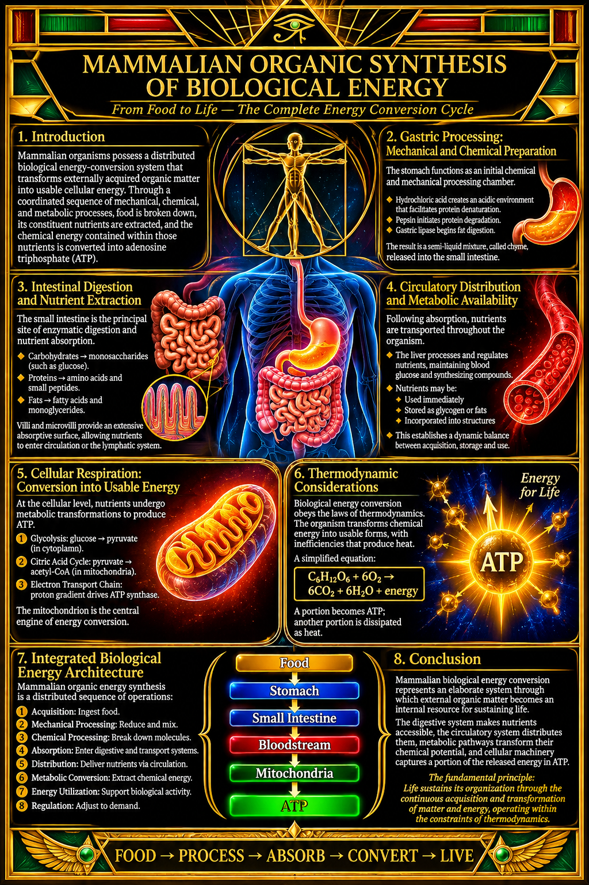

Mammalian Organic Synthesis of Biological Energy

Mammalian Organic Synthesis of Biological Energy
- Introduction
Mammalian organisms possess a distributed biological energy-conversion system that transforms externally acquired organic matter into usable cellular energy. Through a coordinated sequence of mechanical, chemical, and metabolic processes, food is broken down, its constituent nutrients are extracted, and the chemical energy contained within those nutrients is converted into adenosine triphosphate (ATP).
This process does not occur within a single organ. Rather, it represents an integrated physiological system involving the digestive tract, circulatory system, metabolic organs, and individual cells.
- Gastric Processing: Mechanical and Chemical Preparation
The stomach functions as an initial chemical and mechanical processing chamber.
Upon ingestion, food undergoes muscular agitation and exposure to gastric secretions. Hydrochloric acid establishes an acidic environment that facilitates protein denaturation and activates digestive enzymes.
Pepsin initiates protein degradation, while gastric lipase contributes to the initial digestion of dietary fats.
The resulting semi-liquid material, known as chyme, is gradually released into the small intestine for further processing.
The stomach therefore serves primarily as a preparatory and regulatory component of the larger digestive system rather than as the principal site of nutrient absorption or energy production.
- Intestinal Digestion and Nutrient Extraction
The small intestine represents the principal site of enzymatic digestion and nutrient absorption.
Pancreatic enzymes and bile facilitate the breakdown of carbohydrates, proteins, and fats into absorbable components.
These include:
- Carbohydrates, converted into monosaccharides such as glucose.
- Proteins, converted into amino acids and small peptides.
- Lipids, converted into fatty acids and monoglycerides.
The intestinal villi and microvilli provide an extensive absorptive surface, allowing nutrients to enter circulation or the lymphatic system.
This stage transforms complex dietary matter into biologically accessible chemical substrates.
- Circulatory Distribution and Metabolic Availability
Following absorption, nutrients are transported throughout the organism.
The circulatory system distributes these materials to tissues and organs according to physiological requirements.
The liver plays a particularly important regulatory role by processing absorbed nutrients, maintaining blood glucose availability, synthesizing and modifying metabolic compounds, and regulating energy storage.
Nutrients may subsequently be:
- Immediately utilized for cellular metabolism.
- Stored as glycogen or triglycerides.
- Incorporated into structural proteins and other biological materials.
- Reallocated according to metabolic demand.
This establishes a dynamic relationship between energy acquisition, storage, distribution, and consumption.
- Cellular Respiration: Conversion into Usable Energy
At the cellular level, nutrients undergo metabolic transformations that allow their chemical energy to be captured in adenosine triphosphate (ATP).
Glucose metabolism begins with glycolysis, which occurs in the cytoplasm and produces pyruvate.
Under aerobic conditions, pyruvate enters mitochondrial metabolism, where it is converted into acetyl-CoA and subsequently processed through the citric acid cycle.
The resulting electron carriers supply the mitochondrial electron transport chain.
Through oxidative phosphorylation, a proton gradient drives ATP synthase, enabling the production of ATP.
ATP subsequently provides immediately accessible chemical energy for numerous cellular processes, including:
- Muscular contraction.
- Active transport across cellular membranes.
- Protein synthesis.
- Cellular maintenance and repair.
- Electrical signaling.
- Biochemical regulation.
The mitochondrion is therefore a central component of mammalian cellular energy conversion.
- Thermodynamic Considerations
Biological energy conversion is governed by the principles of thermodynamics.
The organism does not create energy from nothing. Instead, it transforms chemical energy obtained from its environment into different forms of energy.
During cellular respiration, glucose and oxygen participate in reactions that produce carbon dioxide, water, and released energy.
A simplified representation is:
C₆H₁₂O₆ + 6O₂ → 6CO₂ + 6H₂O + energy
A portion of the released energy is conserved through ATP production, while another portion is dissipated as heat.
Consequently, biological energy conversion is neither perfectly efficient nor isolated from its environment. It is an open thermodynamic system that continuously exchanges matter and energy with its surroundings.
- Integrated Biological Energy Architecture
Mammalian organic energy synthesis can be understood as a distributed sequence of interdependent operations:
- Acquisition: External organic matter is ingested.
- Mechanical processing: Food is physically reduced and mixed.
- Chemical processing: Enzymes and acids break down complex molecules.
- Absorption: Nutritional substrates enter the organism's internal transport systems.
- Distribution: Circulation delivers nutrients to tissues.
- Metabolic conversion: Cellular pathways extract and transfer chemical energy.
- Energy utilization: ATP supports biological activity and maintenance.
- Regulation: Hormonal and metabolic mechanisms adjust energy production, storage, and consumption.
No individual stage constitutes the entire process. The resulting biological capability emerges through the coordination of specialized structures and biochemical mechanisms.
- Conclusion
Mammalian biological energy conversion represents an elaborate system through which external organic matter becomes an internal resource for sustaining life.
The digestive system makes nutrients accessible, the circulatory system distributes them, metabolic pathways transform their chemical potential, and cellular machinery captures a portion of the released energy in ATP.
The organism is therefore not merely consuming matter. It is continuously processing, reorganizing, distributing, and transforming environmental resources to maintain its internal organization and biological activity.
The fundamental principle: Life sustains its organization through the continuous acquisition and transformation of matter and energy, operating within the constraints of thermodynamics.